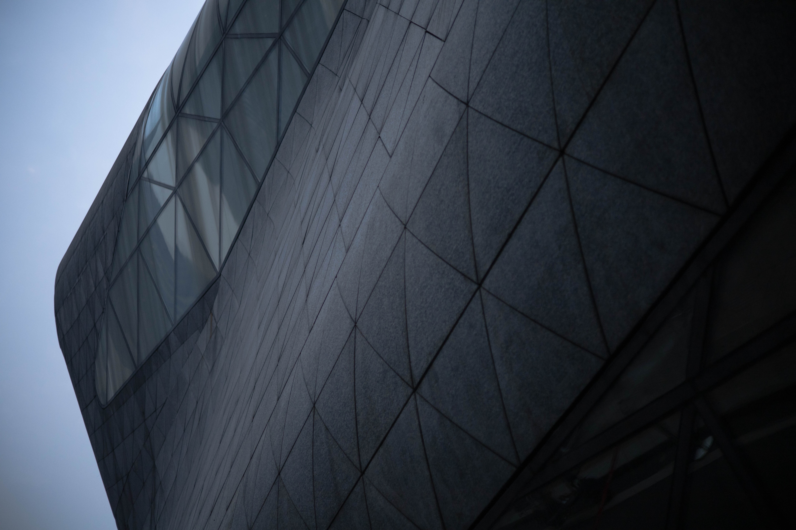

2021年1月16日 / 11 阅读 / 0 评论 / 5 点赞
广州塔（英语：Canton Tower）又称广州新电视塔，
昵称小蛮腰，其位于中国广东省广州市海珠区（艺洲岛）
赤岗塔附近，距离珠江南岸125米，与珠江新城、花城广场、
海心沙岛隔江相望。广州塔塔身主体高454米，天线桅杆高
146米，总高度600米 [31-32] 。是中国第一高塔，
是国家AAAA级旅游景区。
二沙岛又称二沙头、二沙头岛，位于广州市中心珠江河段上
，岛四周江水环抱，南临珠江主航道，北靠珠江次航道，西北角面
对东山湖公园，北面与珠岛宾馆和五羊新城隔江相望，西靠大沙头
码头。
我们这次去了二沙岛一个新开的商城，里面的设计元素让我们
沉浸其中，给二沙岛带来了不一样的新生活力。
